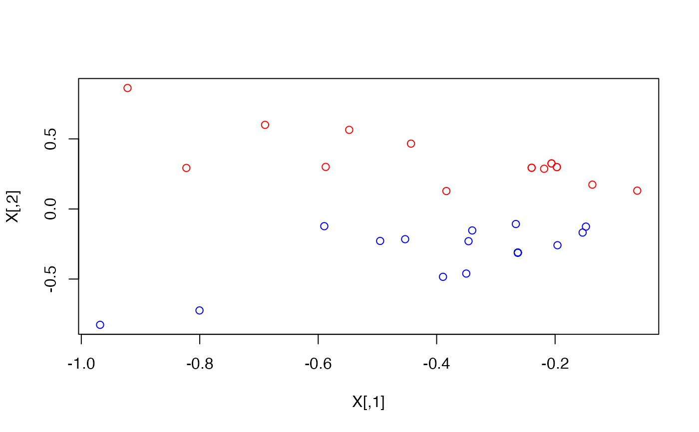
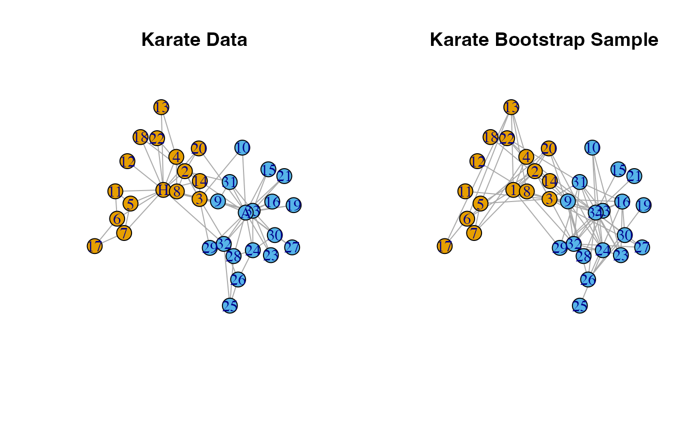

Generate bootstrap samples of a network with the latent space bootstrap method described in Levin and Levina (2019) .
Arguments
- network
An
igraphobject with \(n\) nodes.- d
Dimension of latent space. Recommended only 2 or 3 to maintain interpretability.
- B
number of bootstrap samples to calculate
- output.type
The class of object the resulting bootstrap networks should be. The default is
igraphwhich will make bootstrap samples of classigraph.Note that for large \(B\), this may not be an efficient use of storage space. Other options includematrixwhich will return bootstrap samples as an \(n\)-by-\(n\) adjacency matrix,dgCMatrixwhich will return scarce matrices (packageMatrixmust be loaded), oredgelistwhich will return a \(n\)-by-\(2\) matrix of the list of edges in the network. See make_network_type for details.
Value
A list of length \(B\) where each element is an bootstrap sample.
Each element is of type output.type.
Details
Generate bootstrap samples of a network with the latent space bootstrap method described in Levin and Levina (2019) .
Latent positions of the nodes in the network are first calculated in \(\mathbb{R}^d\) using adjacency spectral with ASE (Sussman et al. 2012) . Then for each pair of nodes, an edge is present with probability equal to the dot product of their positions in the latent space.
Let \(\boldsymbol{A}\) be the adjacency matrix of network with \(n\) nodes.
Additionally, let \(\hat{\boldsymbol{\Lambda}} \in \mathbb{R}^{d \times d}\)
be the diagonal matrix formed by the top d largest-magnitude eigenvalues
of the adjacency matrix and \(\hat{\boldsymbol{U}} \in \mathbb{R}^{n \times d}\)
be the matrix with the corresponding eigenvectors as its columns.
The adjacency spectral embedding of \(\boldsymbol{A}\) is
\(\hat{\boldsymbol{X}} = \hat{\boldsymbol{U}}\hat{\boldsymbol{\Lambda}}^{1/2} \in \mathbb{R}^{n \times d}\).
Let \(X_i\) be the \(\text{i}^{\text{th}}\) row of \(\hat{\boldsymbol{X}}\),
which corresponds to the
location of the \(\text{i}^{\text{th}}\) node in the d dimensional latent space.
To generate a bootstrap adjacency matrix \(\boldsymbol{A}^{(b)}\), for \(1 \leq i < j \leq n\) independently draw \(A_{ij}^{(b)} \sim \text{Bernoulli}(X_i^T X_j)\).
There may be cases in which \(X_i^T X_j \not\in [0,1]\). In these cases, replace \(X_i^T X_j\) with \(\max(\min(X_i^T X_j, 1), 0)\).
References
Levin K, Levina E (2019).
“Bootstrapping networks with latent space structure.”
arXiv preprint arXiv:1907.10821.
Sussman DL, Tang M, Fishkind DE, Prieb CE (2012).
“A consistent adjacency spectral embedding for stochastic blockmodel graphs.”
Journal of the American Statistical Association, 107(499), 1119--1128.
Examples
library(igraph)
data("karate")
#Find the latent positions in 2D
X <- ASE(karate, 2)
plot(X)
# Color According to faction
plot(X, col = ifelse(V(karate)$Faction == 1, "red", "blue"))

# Latent Space Bootstrap
set.seed(1)
boot.sample <- bootstrap_latent_space(karate, d = 2, B = 1)
#plot comparison of original data and bootstrap sample
par(mfrow = c(1, 2))
l <- igraph::layout_nicely(karate)
plot(karate,
layout = l,
main = "Karate Data")
plot(boot.sample[[1]],
layout = l,
main = "Karate Bootstrap Sample",
vertex.label = 1:gorder(karate),
vertex.color = V(karate)$color)
